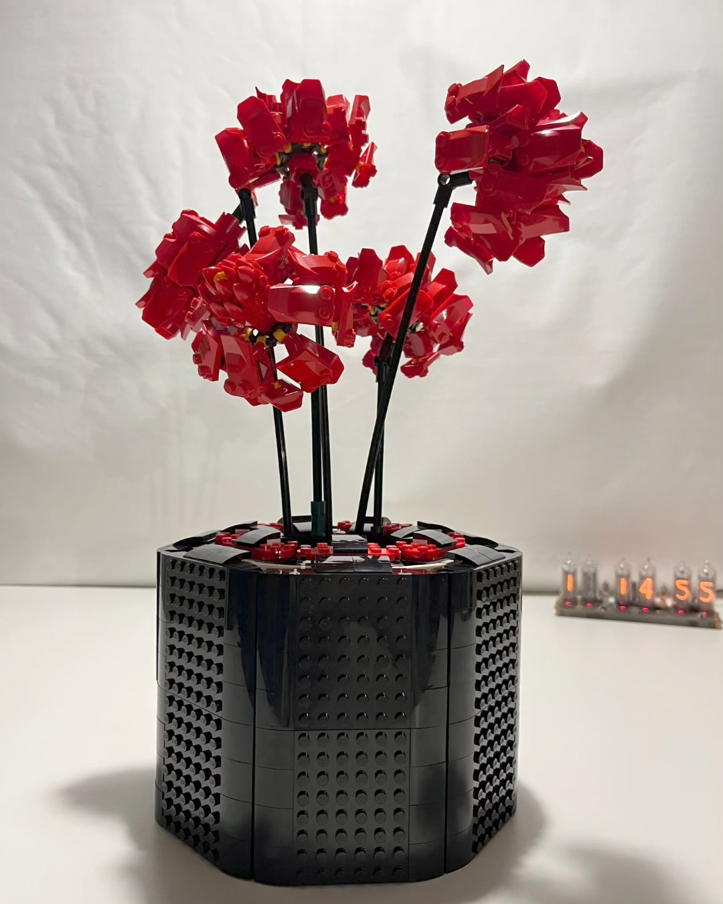
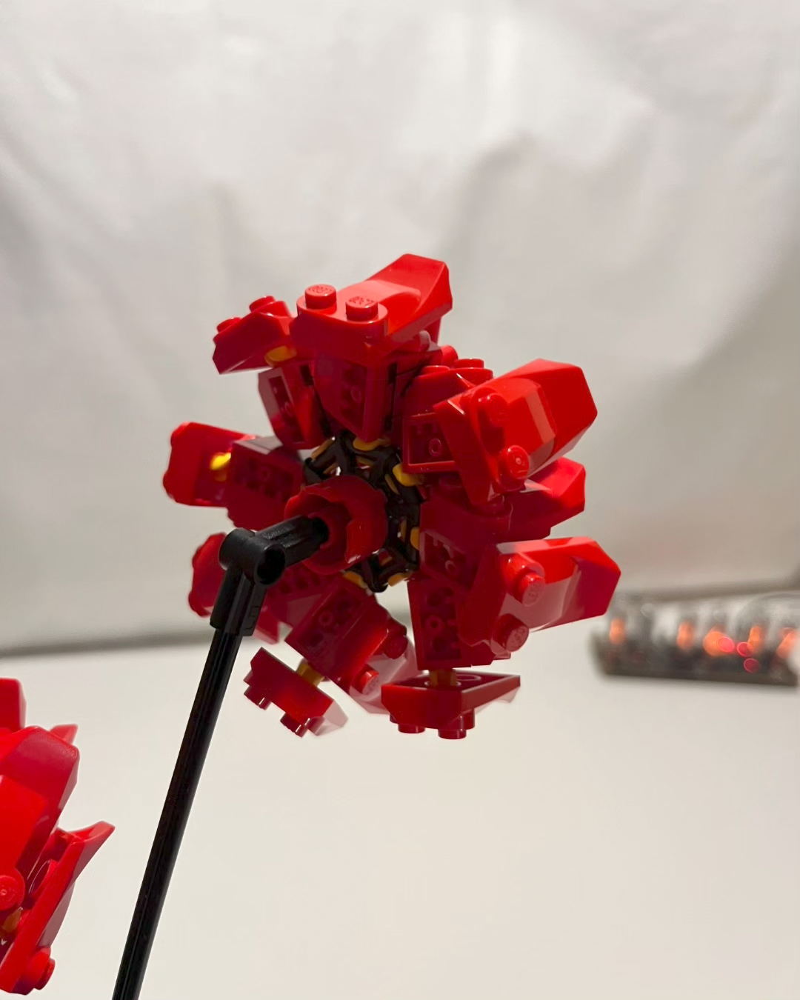
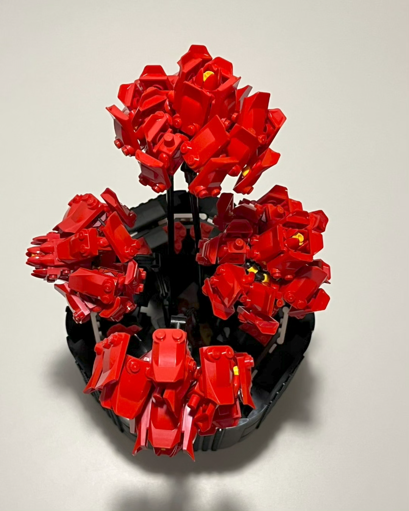
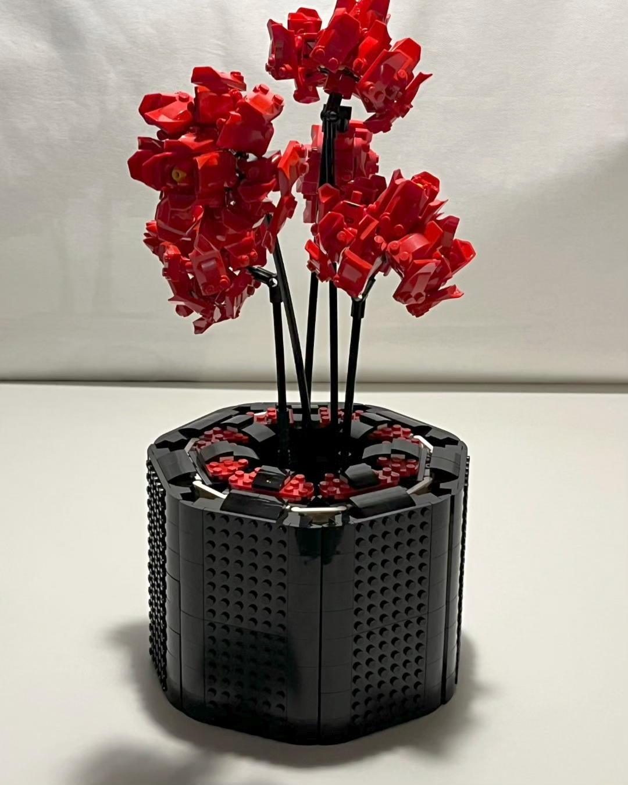

Astralia
The first commision I received will forever be special to me. Astralis Gaming is known well as one of the most successful teams’s in modern competitive gaming history. The worldwide known Danish esport groups popularity led to the opening of Gaming Hub near Tivoli Gardens where a small museum commemorates the teams greatest moments and victories.


In a collaboration between Astralis Nexus and LEGO Tivoli I was tasked with creating a model that could be displayed with the trophies the team has won. Originally, I was meant to design a vase/pot that would hold the rose buke set, but as the project went along, I ended up creating my own flowers as well. The focus was to use the colors the iconic Astralis star rather then placing the logo on the build as the large areas of single colors spanning over wide surfaces seemed like a far more elegant and fitting style for this environment. A challenge was the limitation that I could only use bricks that we had in the LEGO store at the time so this build features a rather small variety of pieces, but in large quantities and repeated patterns, which just so happens to be perfect for floral builds! What’s more, the lack of available pieces that can be used for flexible joints also resulted in a very unusual way of attaching the small scale elemtents to each other. As I often do, I turned my attention to the BAM tower filled with minifigure parts and realized that torsos are a fantastic choice to form posable connections thus the petals have been connected to the stem using monochrome upper bodies to complete the flower that I named Astralia, after the champions themselves. Some find the use of torsos a bit grotesque, but I can not help and get excited every time I find a new way to connect LEGO pieces together!

